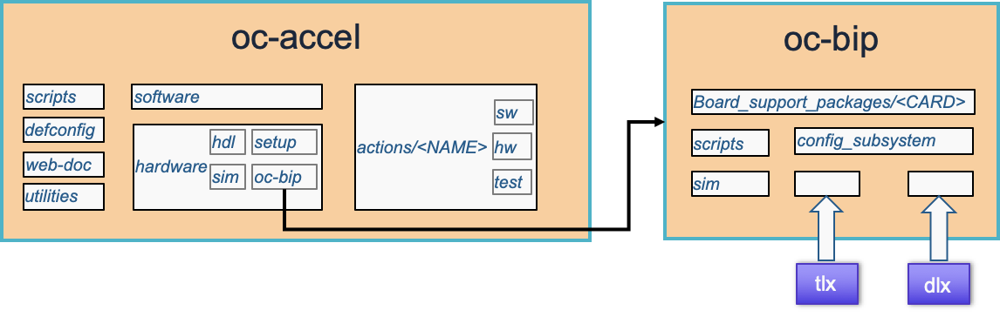
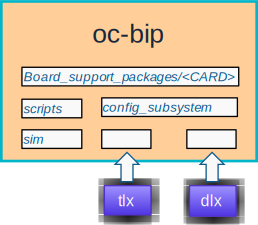
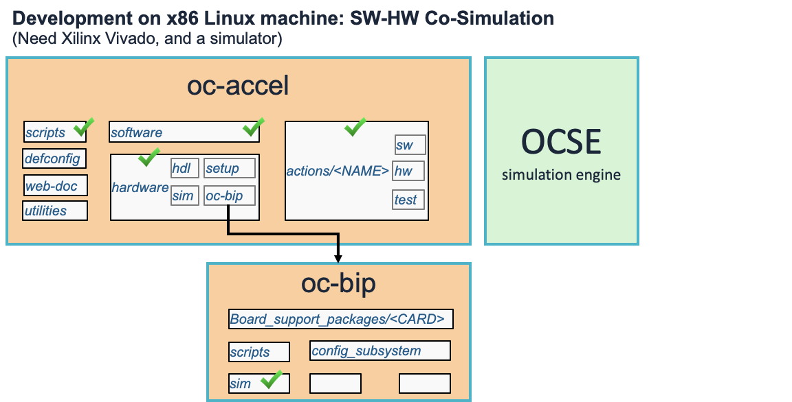
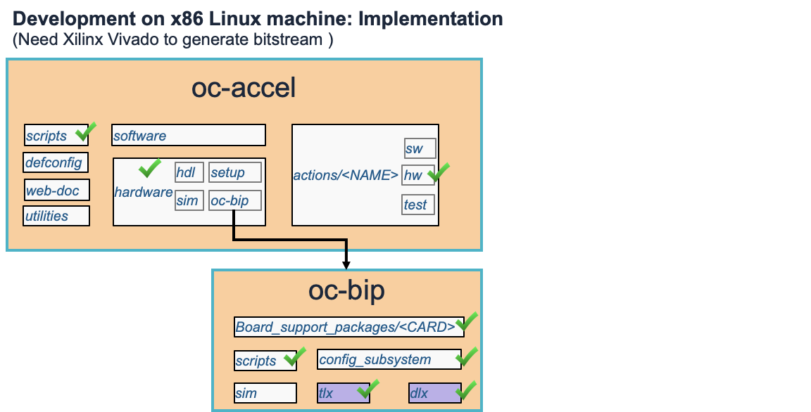
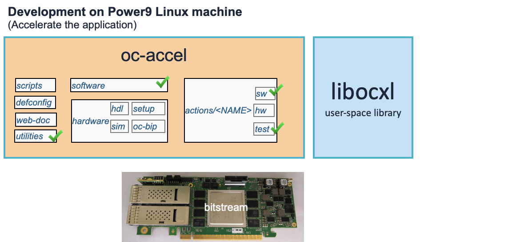
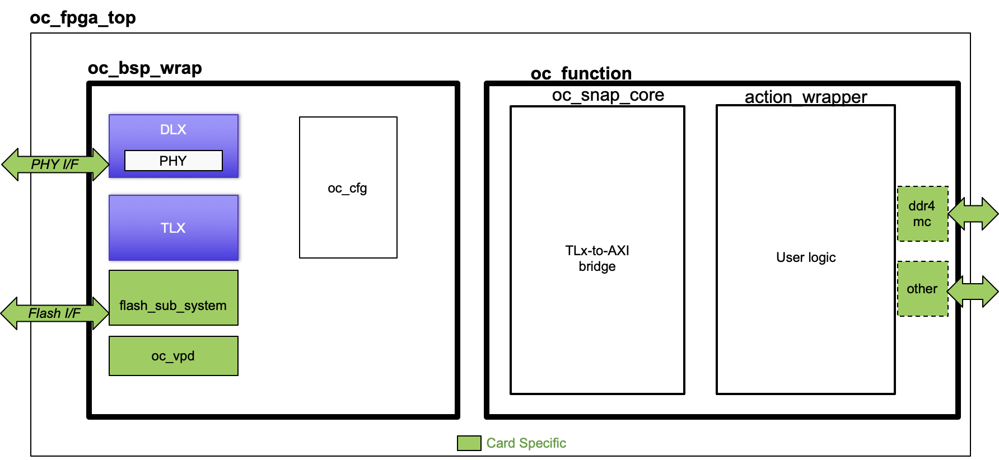

Repository Structure
The diagram below shows the entire diretory structure of OC-Accel GIT repository. It has a submodule oc-bip which contains the card specific packages and modules to support OpenCAPI protocol. The OpenCAPI transportation layer and data link layer modules TLx and DLx are two zip packages that can be downloaded from https://opencapi.org website (not included in this git repository.)

Sub directories in oc-accel
The framework has some facilitating components:
- Scripts: scripts for development environment. It displays a simple user interaction interface to select the card, the application to run (action), simulator, and other options.
- Defconfig: configuration files for Jenkins regression test (users don't neet them.)
- Web-doc: documentations (this webpage)
- Utilities: provides scripts to program FPGA bitstream to the card flash, and reset the card.
It has the modules to bridge OpenCAPI protocol:
- Software: provides user library to operate OpenCAPI cards like open_device(), attach_action(), etc. It includes header files and some tools.
- Hardware: It has a TLx-to-AXI bridge Verilog design in
hdl, the scripts to build a Vivado project and run the process insetup, the simluation scripts insim, and the link to submoduleoc-bip.
Then it is the User Application actions directory.
- OC-Accel has already provided several examples in actions directory, including Verilog/VHDL examples and HLS (High Level Synthesis) examples. When a user wants to create a new Acceleration Application, he or she creates a new directory here.
- Under
actions/<NAME>, use application also have software partsw, hardware parthwand test scriptstest.
Sub directories in oc-bip

Any card vendor can add their card package support in oc-bip. The concept is similar to DSA (Device Support Archieve) or BSP (Board Support Package).
- Board_support_packages: Card vendor need to create a separate folder for a new device. It includes:
- Constraint files (xdc) to describe the Card pins, flash interface, configurations and so on.
- Tcl files to create necessary Vivado IPs.
- Enprypted Verilog files to use Xilinx high speed serdes IOs.
- Verilog files for parameters and FPGA top.
- config_subsystem: Shared common logic for OpenCAPI Config.
- scripts: to pack the entire
oc-bipto a Vivado IP (oc_bsp_wrap.xci). - sim: Top Verilog file for simulation.
- Tlx: Download the encrypted Zip package
ibm.com_OpenCAPI_OC3_TLX_<VERSION>.zipand put here. - Dlx: Download the encrypted Zip package
ibm.com_OpenCAPI_OC3_DLX_<VERSION>.zipand put here.
Filesets for Development and Deployment
Files used in Simulation Step

Files used in Implementation Step

Files used in Deployment

FPGA_TOP Hierarchy
To generate a FPGA bitstream (binary image), the top design file is oc_fpga_top.v.
- oc_fpga_top is located in
hardware/oc-bip/board_support_packeages/<CARD>/Verilog/framework_top - oc_bsp_wrap includes TLx, Dlx, PHY, Flash subsystem, Config subsystem, and Card information (VPD). A script
create_oc_bsp.tclwill assemble these components to a Vivado IP. In simulation, oc_bsp_wrap is NOT required because it is replaced by OpenCAPI Simulation Engine (OCSE). - oc_snap_core is in
hardware/hdl - User logic action_wrapper will be implemented in
actions/<NAME>/hw
